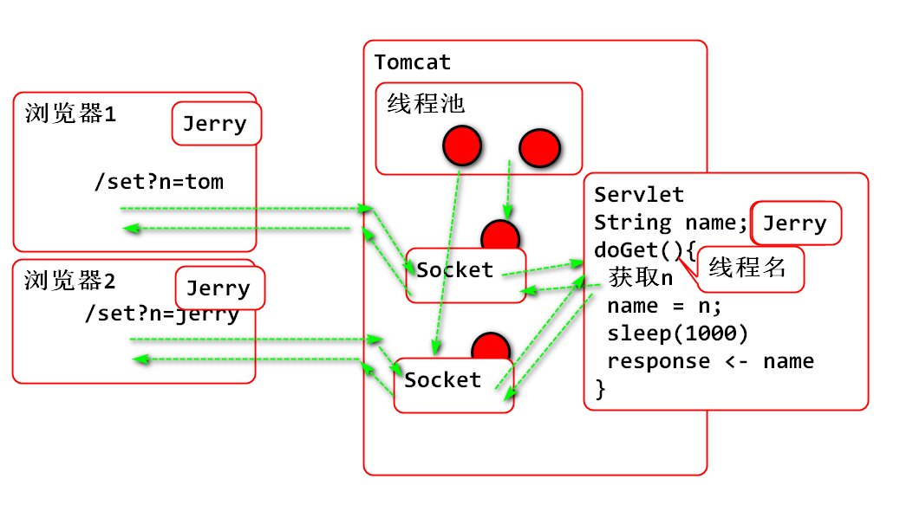
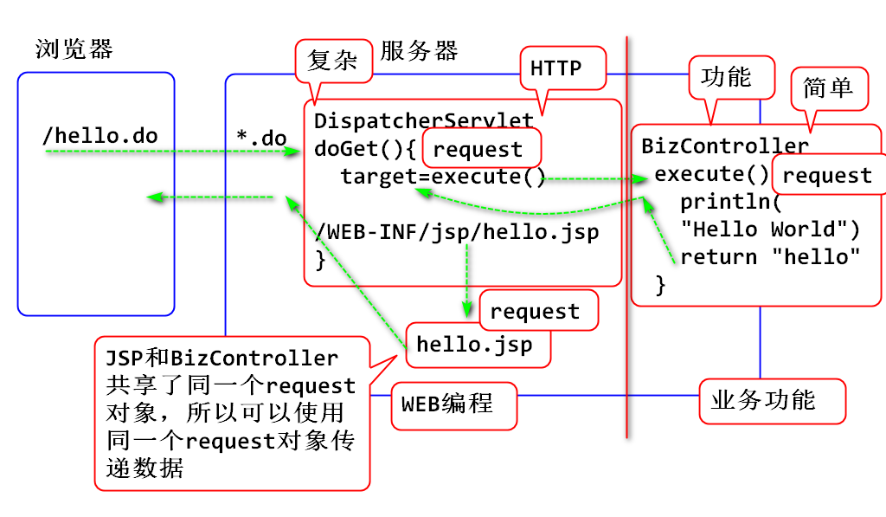

将Java WEB路径映射到实际文件系统路径，用于调用文件系统操作API： File FileInputStream等
案例：
public class RealPathServlet extends HttpServlet {
private static final long serialVersionUID = 1L;
/**
* 演示，获取java web路径对应的实际存储位置
*/
protected void doGet(
HttpServletRequest request,
HttpServletResponse response)
throws ServletException, IOException {
String webpath = "/WEB-INF/jsp";
ServletContext ctx=getServletContext();
//找到 java web 路径的实际存储路径位置
String realpath = ctx.getRealPath(webpath);
System.out.println(realpath);
//遍历一下 jsp 文件夹中的内容
File dir = new File(realpath);
//遍历（列出）文件夹内容
File[] files = dir.listFiles();
for (File file : files) {
System.out.println(file);
}
response.setContentType("text/html;charset=UTF-8");
response.getWriter().println("OK");
}
}
//配置
<servlet>
<description></description>
<display-name>RealPathServlet</display-name>
<servlet-name>RealPathServlet</servlet-name>
<servlet-class>day12.RealPathServlet</servlet-class>
</servlet>
<servlet-mapping>
<servlet-name>RealPathServlet</servlet-name>
<url-pattern>/real-path</url-pattern>
</servlet-mapping>

案例：
public class SetNameServlet extends HttpServlet {
private static final long serialVersionUID = 1L;
private String name;
/**
* 线程并发安全性演示
*/
protected void doGet(
HttpServletRequest request,
HttpServletResponse response)
throws ServletException, IOException {
//获取执行当前doGet方法的线程，这个线程
//由Tomcat的线程池管理，用于处理当前http请求
Thread t = Thread.currentThread();
System.out.println(t);
String n = request.getParameter("n");
name = n;
try {
Thread.sleep(5000);
} catch (InterruptedException e) {
e.printStackTrace();
}
response.setContentType("text/html;charset=UTF-8");
response.getWriter().println("name:"+name);
}
}
解决线程安全问题
public class SetNameServlet extends HttpServlet {
private static final long serialVersionUID = 1L;
private String name;
/**
* 线程并发安全性演示
*/
protected void doGet(
HttpServletRequest request,
HttpServletResponse response)
throws ServletException, IOException {
//获取执行当前doGet方法的线程，这个线程
//由Tomcat的线程池管理，用于处理当前http请求
Thread t = Thread.currentThread();
System.out.println(t);
synchronized (this) {
String n = request.getParameter("n");
name = n;
try {
Thread.sleep(5000);
} catch (InterruptedException e) {
e.printStackTrace();
}
response.setContentType("text/html;charset=UTF-8");
response.getWriter().println("name:"+name);
}
}
}
SmartMVC 是Spring MVC 框架克隆版。
设计目标： 将复杂的Web编程封装起来，使开发更加快速便捷。
原理：

创建前端控制器：
public class DispatcherServlet extends HttpServlet {
private static final long serialVersionUID = 1L;
protected void doGet(
HttpServletRequest request,
HttpServletResponse response) throws ServletException, IOException {
//检查request\response引用的对象类型
Class cls1 = request.getClass();
Class cls2 = response.getClass();
System.out.println(cls1);
System.out.println(cls2);
//调用业务方法，根据业务方法的返回值转发到JSP
BizController controller=new BizController();
//执行业务方法，得到转发的目标页面名称
String target = controller.execute(request);
//将目标页面名称前后增加 JSP文件的位置和后缀
String path = "/WEB-INF/jsp/"+target+".jsp";
request.getRequestDispatcher(path)
.forward(request, response);
}
protected void doPost(HttpServletRequest request, HttpServletResponse response) throws ServletException, IOException {
doGet(request, response);
}
}
配置 web.xml，使前端控制器可以处理任何 *.do 请求
<servlet>
<description></description>
<display-name>DispatcherServlet</display-name>
<servlet-name>DispatcherServlet</servlet-name>
<servlet-class>mvc.DispatcherServlet</servlet-class>
</servlet>
<servlet-mapping>
<servlet-name>DispatcherServlet</servlet-name>
<url-pattern>*.do</url-pattern>
</servlet-mapping>
编写控制器类，封装业务功能
/**
* 控制器类， 用于封装业务功能，
*/
public class BizController {
/**
* 第一个业务功能，Hello World!
* @return 目标页面名称
*/
public String execute(HttpServletRequest request) {
System.out.println("Hello World!");
request.setAttribute("msg", "Hello");
return "hello";
}
}
编写 /WEB-INF/jsp/hello.jsp
<%@ page
language="java"
contentType="text/html; charset=UTF-8"
pageEncoding="UTF-8"%>
<!DOCTYPE html>
<html>
<head>
<meta charset="UTF-8">
<title>Hello</title>
</head>
<body>
<h1>Hello World！</h1>
<p>${msg}</p>
</body>
</html>
测试：
http://localhost:8080/Servlet12/test.do
目标：实现JUnit4的原型，执行某个类中标注了 @Test 注解的方法。
反射： Java提供的动态执行API
案例1，动态检查对象的类型和其类的内部结构
public class Demo03 {
public static void main(String[] args) {
test("123");
test(123);
test(123.0);
}
public static void test(Object obj) {
//obj变量的类型是Object，obj引用的对象是什么类型？
//在程序中检查 obj 引用的对象的类型？
//obj.getClass() 是java在Object类型上定义的
//方法， 可以动态获取当前对象的类型！
Class cls = obj.getClass();
System.out.println(cls);
//Class 类型上提供检查类的内部结构方法
//Field: 字段，就是类中声明的成员变量
//Declared: 声明的
// getDeclaredFields 获取cls类型的上声明的
// 全部成员变量，包含静态变量和实例变量
Field[] fields = cls.getDeclaredFields();
for (Field field : fields) {
System.out.println(field);
}
// Method: 方法
// getDeclaredMethods 返回cls类的定义的全部方法
Method[] methods = cls.getDeclaredMethods();
for (Method method : methods) {
System.out.println(method);
}
//cls.getDeclaredConstructors() 全部构造器
System.out.println("------------");
//
}
}
案例2，利用反射API 动态加载类，动态创建对象：
public class Demo04 {
public static void main(String[] args)
throws Exception {
/**
* 动态加载类，动态创建对象
* 运行期间才加载类，创建对象
*/
Scanner in = new Scanner(System.in);
System.out.print("输入类名：");
String className = in.nextLine();
//根据类名className动态加载类
//如果类名错误，会出现类没有找到异常
Class cls = Class.forName(className);
System.out.println(cls);
//动态创建 cls 对应的对象，cls必须包含无参数构造器
//如果没有无参数构造器，则抛出 无此方法异常
Object obj = cls.newInstance();
System.out.println(obj);
}
}
案例3， 利用反射API找到方法上标注的注解：
import java.lang.annotation.ElementType;
import java.lang.annotation.Retention;
import java.lang.annotation.RetentionPolicy;
import java.lang.annotation.Target;
// Retention 用于声明注解 @Test 的保留范围
@Retention(RetentionPolicy.RUNTIME)
//Target 用于声明 注解的标注位置，当设置为METHOD以后
// 注解 @Test 就只能在方法上标注使用
@Target(ElementType.METHOD)
public @interface Test {
}
public class TestCase {
public void t() {
System.out.println("t");
}
@Test //自定义注解
public void testHello() {
System.out.println("Hello World!");
}
@Test
public void demo() {
System.out.println("demo!");
}
}
public class Demo05 {
public static void main(String[] args)
throws Exception {
/**
* 利用反射API找到方法上标注的注解
*/
String className = "day12.TestCase";
//动态加载类
Class cls=Class.forName(className);
//动态获得类上声明的全部方法
Method [] methods=cls.getDeclaredMethods();
for (Method method : methods) {
System.out.println(method);
//Method 的API，可以检测方法上标注的注解
Annotation[] anns=method.getAnnotations();
for (Annotation ann : anns) {
System.out.println(ann);
}
}
}
}
案例4，利用反射API动态执行方法
public class Demo06 {
public static void main(String[] args)
throws Exception{
/**
* 利用反射API动态执行方法
* 根据动态输入的类名和方法名， 利用反射API
* 加载类，找到方法，创建对象，调用方法。
*/
//动态输入类名和方法名
Scanner in = new Scanner(System.in);
System.out.print("输入类名：");
String className = in.nextLine();
System.out.print("输入方法名:");
String methodName=in.nextLine();
//加载类
Class cls = Class.forName(className);
//利用API在cls上找到要调用的方法
//getDeclaredMethod 在类上根据methodName寻找
//一个 Method 对象，如果找不到抛出异常
Method method=
cls.getDeclaredMethod(methodName);
//动态创建一个cls的对象
Object obj = cls.newInstance();
//执行方法, invoke 就是执行方法，但是必须提供
//包含方法的对象, 如果对象上不包含方法则抛出异常
Object val = method.invoke(obj);
System.out.println(val);
}
}
案例5， JUnit4 原型
public class JUnit4Demo07 {
public static void main(String[] args)
throws Exception{
/**
* JUnit4 的原型: 执行某个类中标注了 @Test 注解的方法。
*/
Scanner in = new Scanner(System.in);
System.out.print("输入测试案例类名:");
String className = in.nextLine();
Class cls = Class.forName(className);
Method[] methods = cls.getDeclaredMethods();
Object obj = cls.newInstance();
for (Method method : methods) {
//查找方法上的某个注解getAnnotation(注解类)
//如果找到指定注解，则返回一个注解对象
//如果找不到指定注解，则返回null
Annotation ann=method.getAnnotation(Test.class);
if(ann==null) continue;
method.invoke(obj);
}
}
}